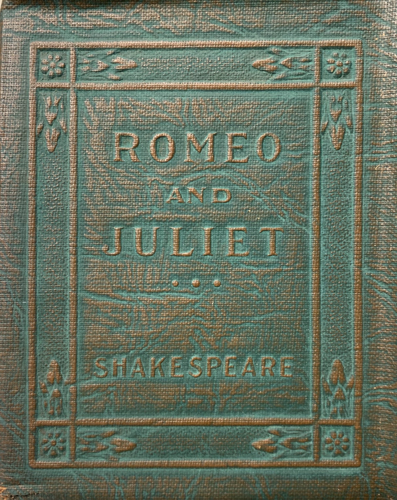
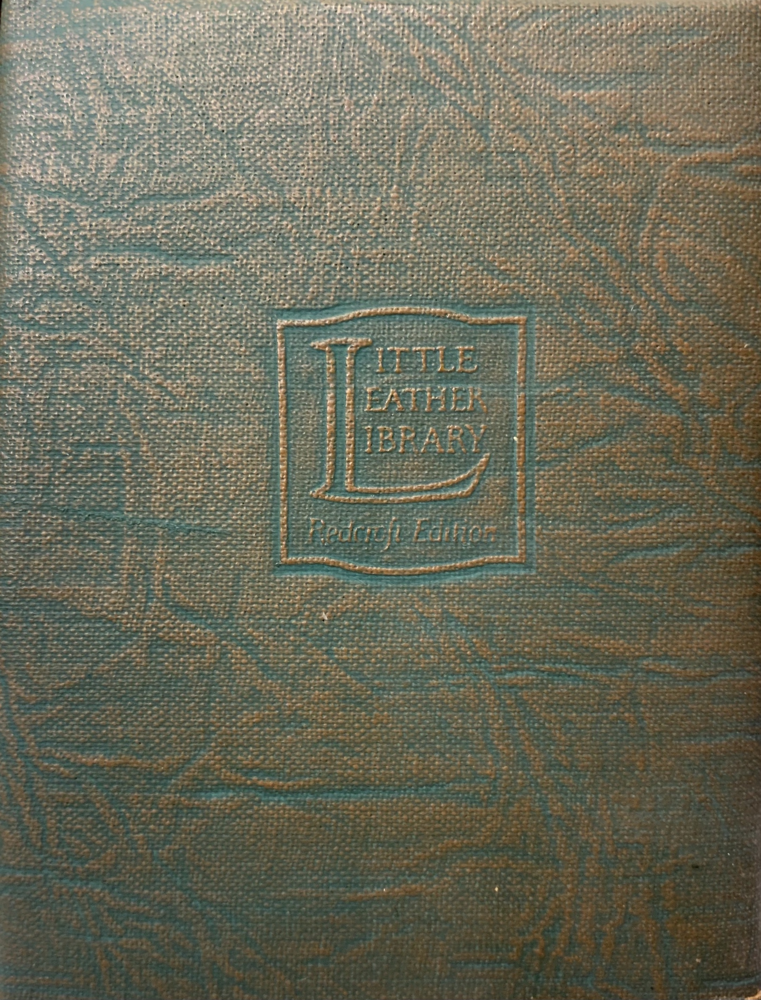

This section ranks the rarity of the green and brown Little Leather Library titles with "Redcroft Edition" stamped onto the back covers, of which there are 102 unique titles that we've identified. Note there is both a brown leatherette and green leatherette version of A Christmas Carol by Charles Dickens that was given a Redcroft Edition stamp. This is the only title of all of the brown ones that was given this stamp. There's also ~100 red leatherette books in existence that have the "Redcroft Edition" stamp on the back, these are all extremely rare and seem to have been produced just before the company name was changed to "Little Luxart Library" and available titles was reduced to 30.
This ranking is compiled from data from over 2,000 online sales. They are grouped by rarity and then listed in random order from there. This is only an estimation, rarity ranked by general availability throughout the past year. The rarity assignments given to these books are only meant to be thought of in the scope of these 102 titles with the Redcroft Edition stamp, exluding the rare red ones. Looking at their availability in the scope of all Little Leather Library books produced, they are generally the easiest to find. Most of these can be found for sale somewhere online at any given time, with the exception of the last few rarest ones in this list only sometimes surfacing.
| Title | Author | Rarity |
|---|---|---|
| Ballad of Reading Gaol | Oscar Wilde | Common |
| Bab Ballads | W.S. Gilbert | Common |
| Will O' The Mill | Robert Stevenson | Common |
| 50 Best Poems of England | Various Authors | Common |
| 50 Best Poems of America | Various Authors | Common |
| Lancelot and Elaine | Alfred Lord Tennyson | Common |
| A Tillyloss Scandal | James Barrie | Common |
| Christ in Flanders | Honore De Balzac | Common |
| Pelleas and Melisande | Maurice Maeterlinck | Common |
| Short Stories | Guy De Maupassant | Common |
| On Going to Church | George Bernard Shaw | Common |
| Barrack Room Ballads | Rudyard Kipling | Common |
| Man Without a Country | Edward Hale | Common |
| The Comtesse of St. Geran | Alexandre Dumas | Common |
| Enoch Arden | Alfred Lord Tennyson | Common |
| Poems | Robert Browning | Common |
| Poems | Robert Burns | Common |
| The Happy Prince | Oscar Wilde | Common |
| The Man Who Was | Rudyard Kipling | Common |
| At the End of Passage | Rudyard Kipling | Common |
| Coming of Arthur | Alfred Lord Tennyson | Common |
| A Child's Garden of Verses | Robert Stevenson | Common |
| The Tempest | William Shakespeare | Common |
| Pippa Passes | Robert Browning | Common |
| Courtship of Miles Standish | Henry Longfellow | Common |
| Essays | Ralph Emerson | Common |
| Salome | Oscar Wilde | Common |
| Finest Story in the World | Rudyard Kipling | Common |
| Land of Heart's Desire | W.B. Yeats | Common |
| The Ancient Mariner | Samuel T. Coleridge | Common |
| Dream Children | Charles Lamb | Common |
| Mumu | Ivan Turgenev | Common |
| A Comedy of Errors | William Shakespeare | Common |
| Snowbound and Other Poems | John Greenleaf Whittier | Common |
| The Holy Grail | Alfred Lord Tennyson | Common |
| Friendship and Other Essays | Henry Thoreau | Common |
| Phantom Rickshaw | Rudyard Kipling | Common |
| Uses of Great Men | Ralph Emerson | Common |
| Rubaiyat of Omar Khayyam | Edward Fitzgerald | Common |
| Speeches & Letters | George Washington | Common |
| Speeches & Addresses | Abraham Lincoln | Common |
| Hiawatha Vol 1 | Henry Longfellow | Common |
| Hiawatha Vol 2 | Henry Longfellow | Common |
| Greatest Thing in The World | Henry Drummond | Common |
| Trial of Socrates | Plato | Common |
| Dreams | Olive Schreiner | Common |
| Midsummer Night's Dream | William Shakespeare | Common |
| Dr Jekyll and Mr Hyde | Robert Stevenson | Common |
| A Dream of John Ball | William Morris | Common |
| Lays of Ancient Rome | Thomas Macaulay | Common |
| The Murders in the Rue Morgue | Edgar Allen Poe | Common |
| Ghosts | Henrik Ibsen | Common |
| Memories of President Lincoln | Walt Whitman | Common |
| Irish Melodies | Thomas Moore | Common |
| Tales of Arabian Nights Vol 1 | Common | |
| Tales of Arabian Nights Vol 2 | Common | |
| Confessions of an Opium Eater Vol 1 | Common | |
| Confessions of an Opium Eater Vol 2 | Common | |
| Sonnets from the Portugese | Elizabeth Browning | Common |
| Sherlock Holmes | Conan Doyle | Common |
| Vampire and Other Verses | Rudyard Kipling | Common |
| Inferno Vol 1 | Dante | Common |
| Inferno Vol 2 | Dante | Common |
| The Gold Bug | Edgar Allen Poe | Common |
| The Importance of Being Earnest | Oscar Wilde | Common |
| As a Man Thinketh | James Allen | Uncommon |
| Last Days of a Condemned Man | Victor Hugo | Uncommon |
| A Message to Garcia | Elbert Hubbard | Uncommon |
| Without Benefit of Clergy | Thomas Moore | Uncommon |
| A Doll's House | Henrik Ibsen | Uncommon |
| Words of Jesus Vol 1 | Uncommon | |
| Words of Jesus Vol 2 | Uncommon | |
| Mark of the Beast | Rudyard Kipling | Uncommon |
| Othello | William Shakespeare | Uncommon |
| Mulvaney Stories | Rudyard Kipling | Uncommon |
| RIP Van Winkle | Washington Irving | Uncommon |
| City of Dreadful Night | Rudyard Kipling | Uncommon |
| Socialism For Millionaires | George Bernard Shaw | Uncommon |
| Lady Windermere's Fan | Oscar Wilde | Uncommon |
| Sonnets | William Shakespeare | Rare |
| The Taming of The Shrew | William Shakespeare | Rare |
| Julius Ceasar | William Shakespeare | Rare |
| As You Like It | William Shakespeare | Rare |
| Mother Goose Rhymes | Rare | |
| The Bear Hunt | Leo Tolstoy | Rare |
| Carmen | Prosper Merimee | Rare |
| Merry Wives of Windsor | William Shakespeare | Rare |
| Merchant of Venice | William Shakespeare | Rare |
| Evangeline | Henry Longfellow | Rare |
| King Lear | William Shakespeare | Rare |
| Twelfth Night | William Shakespeare | Rare |
| Old Christmas | Washington Irving | Rare |
| The Raven | Edgar Allen Poe | Rare |
| Fairy Tales | Hans Andersen | Rare |
| Hamlet | William Shakespeare | Rare |
| Macbeth | William Shakespeare | Rare |
| Romeo & Juliet | William Shakespeare | Rare | A Christmas Carol (BROWN) | Charles Dickens | Rare |
| Through the Looking Glass | Lewis Carroll | Very Rare |
| A Christmas Carol (GREEN) | Charles Dickens | Very Rare |
| Alice in Wonderland | Lewis Carroll | Very Rare |
| The U.S. Constitution and Covenant of the League of Nations |
Super Rare |
Last updated May 2022
 A Redcroft Edition copy of Romeo & Juliet
 Back cover